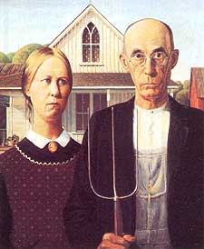

BITS &PIECES
News that fits nowhere else
SYMBOLIC HOUSE-For nearly two generations now, the somber farm couple in Grant Wood's painting American Gothic has come to symbolize the hardworking, steadfast character of the nation's agricultural heartland. But times are changing, and not necessarily for the better. Word has reached Mother that trouble is brewing in Eldon, Iowa (population 1,000), where the frame farmhouse that Wood used in his painting still stands. Seems as if some big-city real estate interests have prevailed on local officials to allow them to erect a huge medical-waste disposal plant on one side of town. "Despite the fact that maybe 80% of the townspeople are against it," said Barbara Pauls, an Eldon resident. What offends her is not merely that the plant will be sited within a couple of blocks of the farmhouse, or that the mayor and the town council appear to have negotiated the deal on the quiet. Rather it is that Eldon, like a lot of other rural communities in the Midwest, could become a dumping ground for waste produced in the cities of the populous Northeast. "Not from just there, either," Pauls continued. "As I understand it, the people behind this project even intend to dispose of medical waste from foreign countries. I mean, what is America coming to?"
GOLD ON THE HILL-Officials are keeping its location a secret, but the lode of bat guano discovered within the town limits of Gold Hill, Oregon, not long ago is proving a small windfall, particularly for Katie the Cop, the chief of police. "Like a lot of other small towns," said Mayor Jay De Yoe, "we're always looking for revenue. When a town worker stumbled upon the guano deposit, we thought it'd be a kick to sell it as fertilizer. Katie needs a new car." So, after collecting, sterilizing and packaging the guano, the town sells it-$2 for one ounce, plus $r for shipping. "It makes a terrific gift," said De Yoe. "And it's health department-approved." But is it a terrific fertilizer? "Well, one of our citizens spread it around a tomato plant a short while back," the mayor told Mother. "It grew like blazes. Then it ate the cat." For orders, write to : Town of Gold Hill, P.O. Box 308, Gold Hill, OR 97525 (Attention: Guano.)
READ MY LIPS-Mention crude oil and folks think of cars and home heating. But a lot of other things are made with petroleum, including the vast majority of cosmetics and skin-care products. Ironically, Autumn-Harp, a Vermont manufacturer that makes an all-natural lip balm (Lip-Sense), has found itself squeezed by the current crisis in the Middle East. A favorite in the desert countries because of its high sun protection factor (SPF 18) and exotic flavors, the lip balm has become an export victim of the United Nations trade embargo.
"The United States has sent military forces to the Mideast to protect the oil," grumped company president Kevin Harper, "and we're cut off from selling our petroleum-free products in Kuwait." Petroleum ingredients-principally paraffin and petrolatum-dominate most cosmetic products because they're less expensive. "We use plant oils and waxes instead," said. Harper, "because we believe the plant products work better and taste better. Plant ingredients are also renewable resources, and they don't make for oil spills in the ocean." Five will get you to that the GIs over in Saudi Arabia are protecting their lips with some kind of petro-balm.
FOLKS TO FOLKS-Harvey O'Day, a longtime Mother subscriber from Central Point, Oregon, has issued this challenge: "I have read that at least half of the food supply in the Soviet Union spoils before it can reach the consumer. This is because of a lack of adequate transportation and refrigeration. Would it be so difficult for you to publish a Russian-language supplement to Mother Earth News in which, for example, you show these people how to dry and preserve fruits and vegetables using the 55-gallon drum solar apparatus you featured in issue 64? Could you also ask your readers, both old and new, to come together to form a Mother Earth Corps whose purpose would be to devise simple processes and to invent easily built machines that would help these people better their lives?"
Two great ideas. Do we have any volunteers out there?
FARMER TO FARMER-Dan Tawczynski, who raises potatoes, sweet corn and a variety of vegetables on zoo acres near Great Barrington, Massachusetts, is thinking along somewhat the same lines, though on a farmer-to-farmer basis. In the July/August issue of The New Farm magazine, he asks: "Why is there not a formal network, a clearinghouse, what-have-you, that can steer farmers with problems to farmers with possible solutions?" Turns out there is one: the Farmers' Own. Network for Education (FONE), established in 1984 by the nonprofit Rodale Institute. If you're interested, you can write to: FONE, c/o The New Farm, 222 Main St., Emmaus, PA 18098
FEEL SHARP, BE SHARP-Among hundreds of other thought-provoking gems in David Wann's new book, Biologic (published by Johnson Books in Boulder, Colorado, and printed on recycled paper with soybean ink, is this sharp, memorable little profile:
"Sometimes, for the sake of profit, we've intentionally pursued sloppy design, as the inventor of the disposable razor blade did back in the 1890s. To this man, King Gillette, goes my honorary award as `Pioneer of the Throwaway Society.' Humans have been shaving for 20 thousand years or so, using flint, clamshell, bronze, iron and steel razors. And, undoubtedly, many of these razors were thrown away when they no longer functioned just right. But Gillette's dubious contribution to the 20th century is that he deliberately searched for some item that could be profitably thrown away. Gillette's first attempt at fame and fortune was a poor-selling book, The Human Drift, which was thrown away, all right, but without making him any money.
"According to historian Charles Panati, Gillette `turned elsewhere for his fortune. A friend, William Painter, inventor of the throwaway bottle cap, suggested that the failed author devise an item that, like the bottle cap, was used once, then discarded. The idea intrigued Gillette. For a year, he repeatedly ran through the alphabet, listing household and business items in frequent use.' In 1895, while shaving with a dull razor, inspiration hit home in the form of a minor neck wound-blades that could be simply thrown away when they got dull."
FAMILY ADDITIONS-Three new public radio stations are now carrying the weekly "Mother Earth News Magazine of the Air."
Welcome, to: KSTK in Wrangell, Alaska; KOPB in Portland, Oregon; and WDCB in Glen Ellyn, Illinois, serving the greater Chicago area.
|
 Once just background, Wood's farmhouse is now foreground. |
|
|